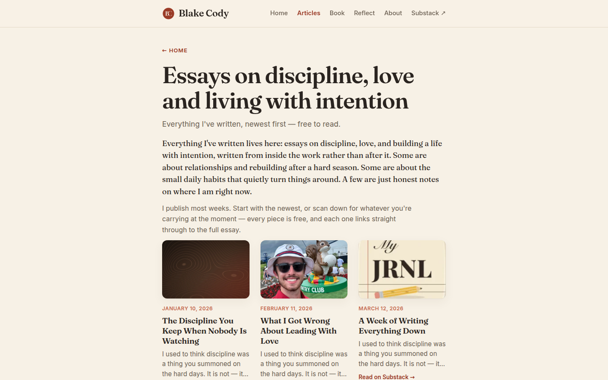

blakecody.com — UI & visual design audit / change log
/articles.htmlmainFixed since the page-01 report, verified here: H2 real buttons now exist (.sub-submit at 136×46) · X3 the Substack iframe is gone, replaced with a native .sub-form in your own palette · T10 every image carries width/height, logo is 60×60 at 4 KB · C5 post titles are h3.
Still open, confirmed again here and cross-referenced rather than re-argued:
| ID | Finding | Measured on this page |
|---|---|---|
| R1 | Critical. At 390px the nav clips — Reflect, About and Substack render off-screen, no hamburger, no visible scrollbar | clientW 170 · scrollW 386 |
| V1 | One breakpoint; .wrap caps at 720px | wrap 720px on a 1440px viewport |
| R3 | Focus ring is the browser default; no :focus-visible anywhere | outline: auto 1px rgb(16,16,16) |
| H5 | Card CTAs bottom-misaligned | row 1 bottoms at y=928, 928, 904 |

document height viewports
desktop 1440 2,955 px 3.28
tablet 820 2,944 px 2.49
mobile 390 7,456 px 8.83 ← with a 14-post feed
Deleting pagination was the right call and I recommended it — it turned three uncrawlable JS states into one URL containing every essay. But it was an SEO fix, and it landed on a layout that was never designed to hold the whole archive.
On a phone each card is a full-width 342px block with a 228px-tall thumbnail, so one essay costs roughly 400px of scroll. Fourteen of them is nearly nine screens. And the archive grows every time you publish — at thirty essays this is an eighteen-screen page.
Fix — keep the one URL, shrink the row@media (max-width: 560px) { .post-thumb { display: none } }. That alone takes the page from 8.8 screens to roughly 4. The titles are set in Fraunces and carry the row perfectly well on their own — see U3, where the images are actively hurting.Measured: .wrap = 720px, three cards across, 207px each, thumbnails at 207×138. The archive is the page that most needs width — it is a grid of images and titles — and it gets the same column as a privacy policy.
Card titles wrap to three lines at this width ("The Discipline You Keep When Nobody Is Watching" takes three), which is what makes the row look cramped and what causes H5's ragged bottoms to be so visible.
The V1 fix — max-width: 1100px above 1280px — takes these cards to roughly 340px, drops most titles to two lines, and makes the thumbnails real images. Nothing else on this page needs to change for it to look substantially better.
object-fit: cover
| Natural size | Ratio | What it is | Result at 3:2 |
|---|---|---|---|
| 1600×1000 | 1.60 | dark abstract | near-native crop, fine |
| 900×1200 | 0.75 | portrait photograph | centre-cropped to landscape; most of the frame discarded |
| 192×192 | 1.00 | cream app icon | upscaled past its native width; soft |
| 480×640 | 0.75 | portrait photograph | same crop problem |
This was V4 on the homepage with three cards. Here it repeats fourteen times down a single column, and the tonal swing — dark, bright, cream, dark — is what the eye tracks instead of the titles. In the screenshot above, your attention goes to the middle card. Not because that essay is better, but because that image is brighter.
FixOn an archive I would now argue harder for the second option than I did on the homepage: remove the thumbnails and let the titles carry it. Fourteen Fraunces headlines with dates, in a clean column, would look more considered than fourteen mismatched Substack cover images — and it fixes U1 at the same time.
If you keep them, apply a warm duotone or a low-opacity --accent overlay with mix-blend-mode: multiply so whatever arrives from the feed resolves into your palette.
The V2 fix was applied to link colours but not to --accent-soft where it is used for text. Measured against --bg #f7f1e6:
| Element | Colour | Size | Ratio | Needs |
|---|---|---|---|---|
.post-meta — every article date | #c46a4f | 12.2px | 3.38 | 4.5 |
.eyebrow — "← HOME" | #c46a4f | 13.1px | 3.38 | 4.5 |
Interesting detail from the sweep: the <a> inside the eyebrow renders at #9a3b27 and measures 6.17 — it passes. So the link is readable and the wrapper it sits in is not. Two colours, one component.
Fix as before: use --accent #9a3b27 for both, or darken --accent-soft to about #a8532f. This same pair fails on book, reflect, about and 404 — one token change closes all five pages.
row 1 — .post-more bottoms: 928, 928, 904 24px ragged
row 2 — .post-more bottoms: 1318, 1294, 1294
Cards are equal height (360px) but contents are top-aligned, so a two-line title leaves its CTA 24px higher than a three-line neighbour. With fourteen cards the raggedness now repeats down five rows instead of appearing once.
.post-body { display: flex; flex-direction: column; height: 100%; }
.post-more { margin-top: auto; }
Two lines, still. This is the cheapest visible improvement on the page.
Fourteen identical cards in an unbroken grid give a reader no sense of progress or position. On desktop that is five rows with nothing marking where they are; on mobile it is fourteen identical blocks.
Cheap fix: group by year or month with a small label between groups — you already have the dates, and .section-label already exists as a style. It turns an undifferentiated wall into something scannable, and it makes the archive feel like a body of work accumulating rather than a list.
| Check | Result |
|---|---|
| Page depth | 1440 → 2,955px (3.28 folds) · 820 → 2,944px (2.49) · 390 → 7,456px (8.83) |
| Content column | .wrap 720px at every viewport ≥561px · cards 207×360 |
| Thumbnails | All 207×138 (3:2, object-fit: cover) from 1.60, 0.75, 1.00 and 0.75 ratio sources |
| Card CTA alignment | 928 / 928 / 904 — 24px ragged, repeating per row |
| Contrast | .post-meta 3.38 · .eyebrow 3.38 · .eyebrow a 6.17 ✓ · .archive-sub 5.52 ✓ · excerpt 5.52 ✓ · titles 13.62 ✓ |
| Buttons | .sub-submit 136×46 ✓ — a real target, above the 44px floor |
| Mobile nav | clientW 170 · scrollW 386 · 3 items off-screen |
| Focus ring | outline: auto 1px rgb(16,16,16), no box-shadow |
| Images | All carry width/height ✓ |
UI page 02 of 7 complete.
blakecody.com UI change log · generated 7 September 2026